Quantum communication
1 curated item · 7 result figures
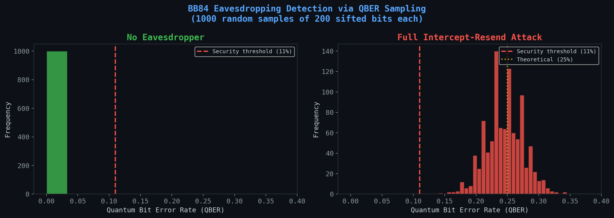
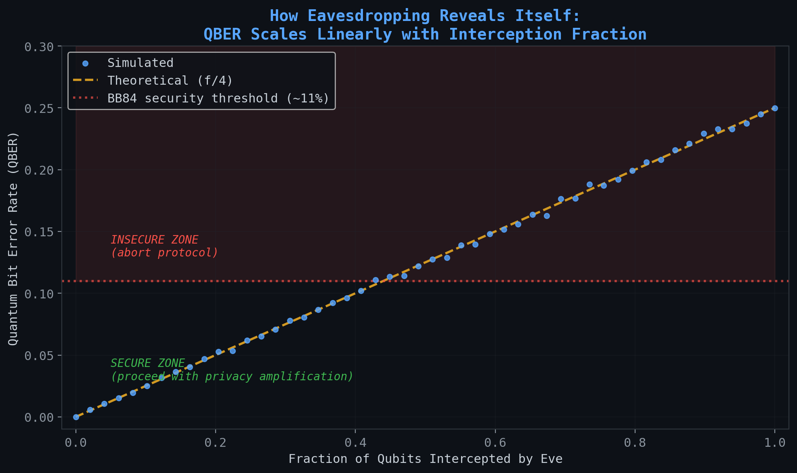
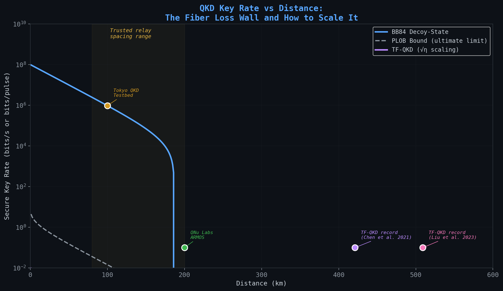
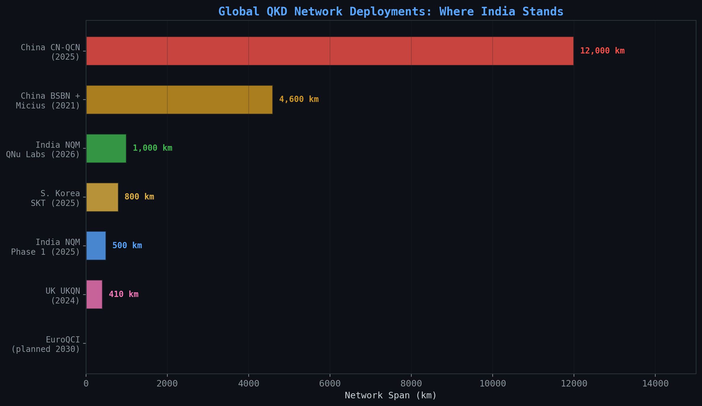
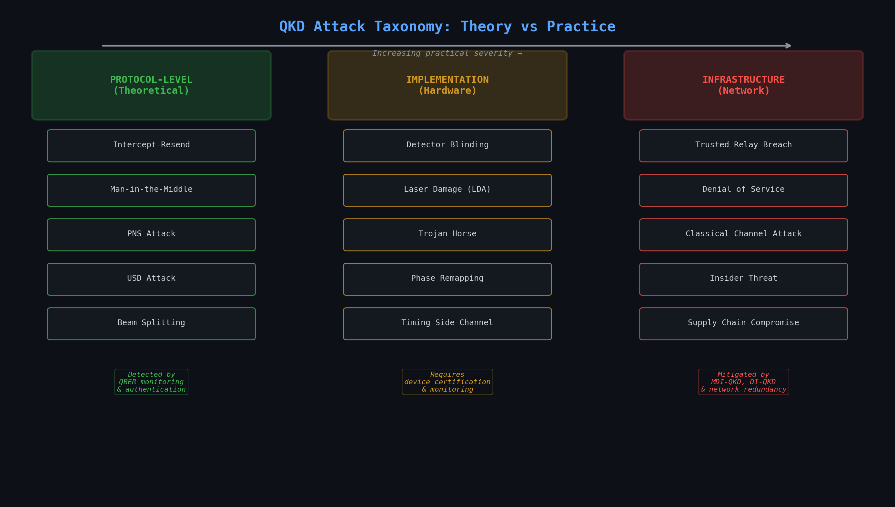
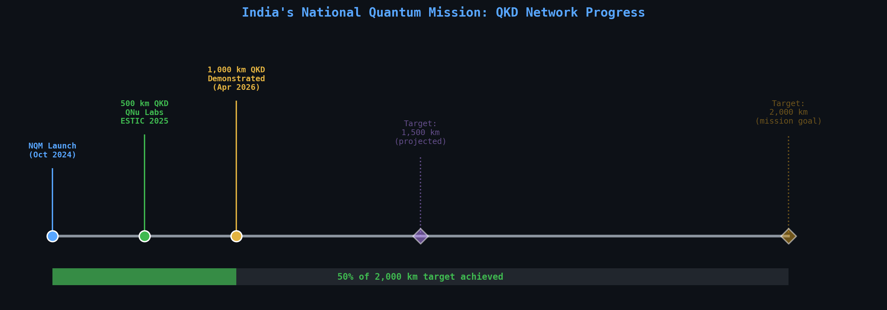
Quantum optimization benchmarks
4 curated items · 3 result figures
This folder accompanies both our arXiv paper and a four-part Medium article series focused on using quantum algorithms to solve classically hard combinatorial problems. Each subfolder includes QUBO formulations, algorithm implementations, and benchmarking results.
> 🧠 These problems are NP-hard and serve as practical benchmarks to test the feasibility, scalability, and resource efficiency of quantum optimization techniques.
📰 Medium Article Series (2024)
Each article walks through the theory, QUBO formulation, and quantum optimization results using Qiskit.
🧪 Algorithms Implemented
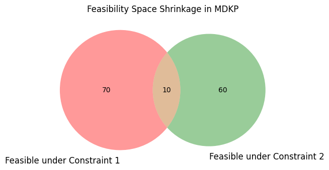
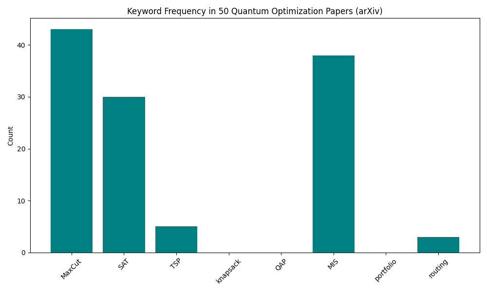
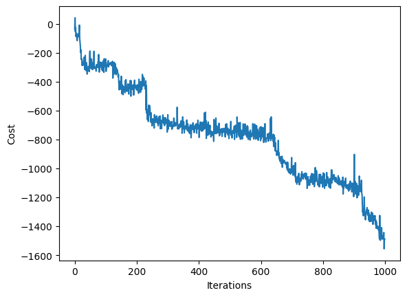
The cost of Shor
13 curated items · 17 result figures
This project runs small Shor-style order-finding experiments in Qiskit and summarizes them with strict post-processing metrics.
The workflow is:
1. Build QPE order-finding circuits for semiprimes N. 2. Run on Aer simulator or IBM hardware. 3. Post-process bitstrings with strict order checks. 4. Enrich and plot results with strict and exploratory diagnostics.
What is in this repo
- shor/modexp.py: modular-multiplication oracle builders.
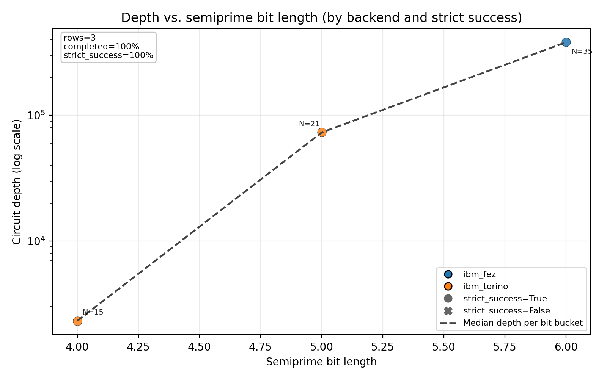
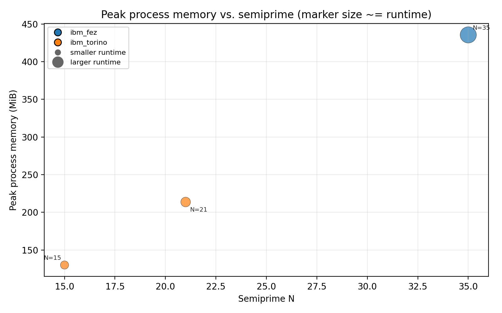
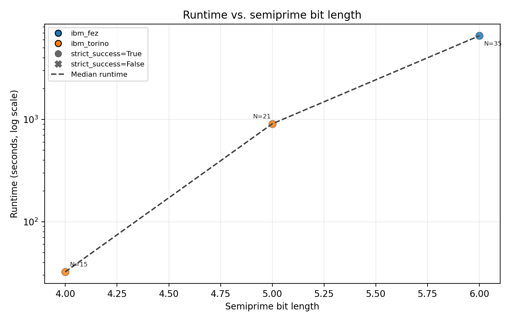
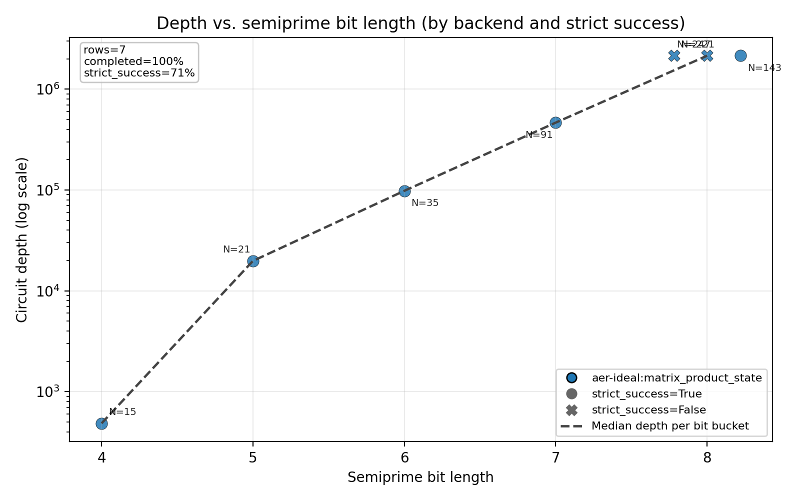
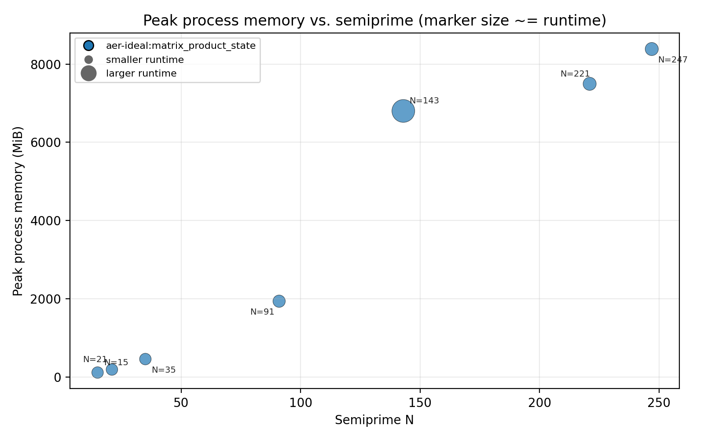
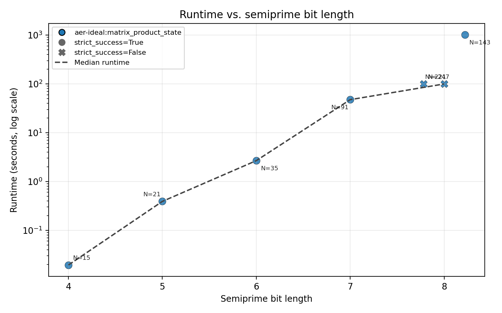
Supporting material in The cost of Shor7 items
Quantum machine learning
Project notes and supporting data
Work Soon
Transformers and reinforcement learning
Project notes and supporting data
Work Soon